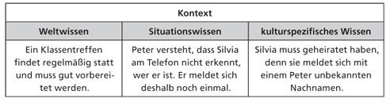
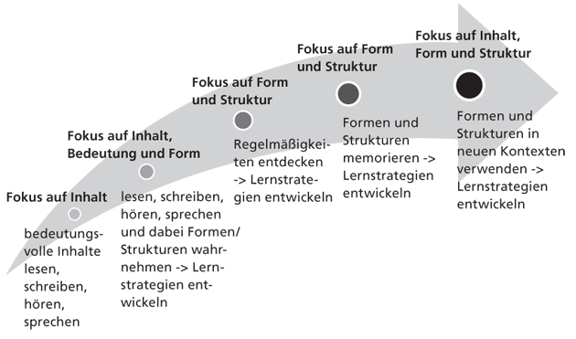
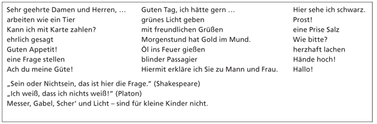
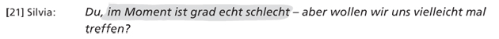
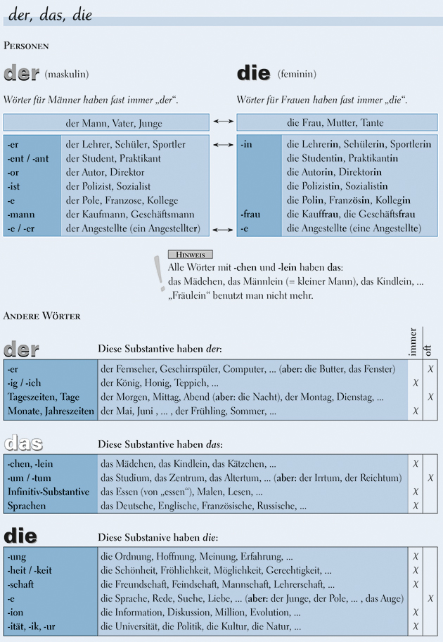
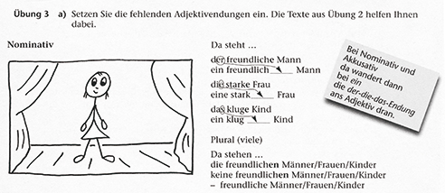
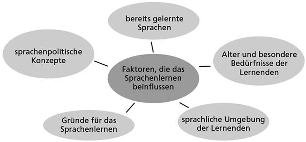

3 Deutsch als fremde Sprache (DLL3)
3.1 Sprache als Medium der Kommunikation
Die deutsche Sprache ist wie alle Sprachen ein Medium, mit dem es möglich wird, dass sich Menschen verständigen. Doch wodurch kann Sprache diese Funktion erfüllen? Mit dieser Frage befasst sich die wissenschaftliche Disziplin der Linguistik. Sie beschreibt und erklärt, wie die einzelnen Bausteine oder Elemente der Sprache geformt sind, wie sie zueinander in Beziehung stehen, wie und wodurch sie Bedeutung übermitteln und welchen kommunikativen Funktionen sie dienen.
Sehr häufig stehen in wissenschaftlichen Grammatiken die Formen und Strukturen von sprachlichen Mitteln im Vordergrund. Wir möchten einen anderen Weg gehen. Das folgende Zitat soll diesen Weg andeuten: “Denk an die Werkzeuge in einem Werkzeugkasten: es ist da ein Hammer, eine Zange, eine Säge, ein Schraubenzieher, ein Maßstab, ein Leimtopf, Leim, Nägel und Schrauben. – So verschieden die Funktionen dieser Gegenstände, so verschieden sind die Funktionen der Wörter.” (Wittgenstein 1984, Paragraph 11).
In Kapitel 1 erläutern wir,
- was es bedeutet, wenn man Sprache als Werkzeug betrachtet, und führen die grundlegenden Begriffe ein, mit denen wir in dieser Einheit über das Deutsche als fremde Sprache sprechen werden,
- welche unterschiedlichen Bedeutungen von Grammatik es gibt und welche wir in dieser Einheit verwenden,
- wie und wodurch sprachliche Kommunikation eigentlich funktioniert, mit dem Ziel zu zeigen, warum Menschen, die miteinander in einer Sprache kommunizieren, sich verstehen oder sich verstehen können,
- wie sprachliche Mittel mit einem Fokus auf ihre Funktionen und Formen im Unterricht vermittelt werden können. Die Entwicklung der Sprachbewusstheit bei den Lernerinnen und Lernern ist dabei das Schlüsselmoment.
3.1.1 Funktionen und Formen sprachlicher Mittel
3.1.1.1 Bedeutungen von Grammatik:
Grammatik kann begriffen werden als das gesamte System von Formen, das einer Sprache zugrunde liegt. Dieses System bildet die Regelmäßigkeiten einer Sprache ab. (Helbig 1981; Funk/Koenig 1991). Barkowski (2010, S. 106) weist ausdrücklich darauf hin, dass dieses System aus Formen mit spezifischen Funktionen für die konkrete Äußerung besteht.
Die Dokumentation dieses Systems einer Sprache zu einem pädagogischen Zweck. So verstanden kann eine Grammatik ein umfassendes Nachschlagewerk, aber auch eine Schulgrammatik sein, die ausgewählte Formen darstellt, ein Zusatzmaterial zu einem Lehrwerk oder ein elektronisches Dokument, das im Internet zur Verfügung steht.
Grammatik ist der aktuelle Stand des sprachlichen Wissens, über das eine Lernerin / ein Lerner verfügt, also das Regelsystem im Kopf eines Lernenden. Dieses Wissen steht in enger Beziehung zur Grammatik als System von Formen und ihren Bedeutungen. Es muss diesem System aber nicht vollständig entsprechen und es entwickelt sich im Lauf des Spracherwerbs ständig weiter.
Grammatik ist ein Beschreibungsmodell für die (Teil-)Systeme oder Komponenten der Sprache (z.B. Wortschatz und Strukturen). Es gibt verschiedene Beschreibungsmodelle oder linguistische Modelle wie z.B. die Valenzgrammatik. Linguistische Modelle verfolgen unterschiedliche Zielsetzungen und folgen unterschiedlichen theoretischen Vorannahmen über Sprache. Dementsprechend können sie nicht alle für Zwecke des Fremdsprachenunterrichts herangezogen werden.
Grammatik in dieser Einheit: Wir verstehen Grammatik in dieser Einheit in einem weiten Sinn als System aller sprachlicher Mittel, ihrer Formen und den Regeln ihres Zusammenwirkens sowie ihrer kommunikativen Funktionen. Damit ist Grammatik die Basis dafür, dass Menschen ihre Mitteilungsabsichten sprachlich realisieren können.
Um eine Äußerung zusammenzubauen, bedienen wir uns sprachlicher Mittel aus vier verschiedenen Schubladen:
- feste oder – wie wir sagen – formelhafte Wendungen
- Wörter (flektierte und unflektierte)
- grammatische Regeln, Endungen usw.
- Intonationsmuster und Laute
Sie als Lehrende haben für Ihren Unterricht das Ziel, Lernende darin zu unterstützen, ihre Mitteilungsabsichten auf Deutsch realisieren zu können und Mitteilungen von anderen zu verstehen, also auf Deutsch zu kommunizieren. Dazu müssen Lernende die sprachlichen Mittel, ihre Formen und Funktionen, die das Deutsche zur Verfügung stellt, richtig verwenden können. Und Sie als Lehrkraft müssen Fragen der Lernenden nach dem Warum, Wozu und dem Wie in Bezug auf Sprache beantworten können. Wenn wir darunter Grammatik verstehen, hätten die Lernenden mit der Aussage, dass sie im Unterricht Grammatik erwarten, eigentlich doch wieder recht.
3.1.2 Wie funktioniert sprachliche Kommunikation?
Das Kommunizieren zwischen den beiden Telefonierenden ist eine soziale Handlung mithilfe des Werkzeugs Sprache. In den sprachlichen Äußerungen spielen formelhafte Wendungen, Wörter, Sätze, Laute und Intonationsmuster zusammen; die Äußerungen transportieren bestimmte Mitteilungsabsichten der Sprechenden, die auf die gehörten und verstandenen Inhalte des Gesprächs in einem bestimmten Kontext reagieren.
3.1.2.1 Kommunizieren in Kontexten
Fremdsprachenlernende haben aufgrund ihres eingeschränkten Sprachwissens Schwierigkeiten, einen Text zu verstehen. Kontextwissen ermöglicht es ihnen, Verstehenslücken zu kompensieren. Um kommunikativ erfolgreich zu sein, braucht man möglichst deutliche Hinweise auf den Kontext und die Fähigkeit, diesen wahrzunehmen und richtig zu entschlüsseln. Beispiel: Kontextwissen des Beispieltelefonats:

3.1.2.2 Kommunizieren ist sprachliches Handeln
Im nächsten Schritt sehen wir uns an, wie Silvia und Peter mit Sprache handeln, während sie miteinander telefonieren. Mit ihren Äußerungen (Wörtern, Satzteilen, Sätzen usw.) vollziehen sie Handlungen. Sprache, Handeln und der Kontext des Gesprächs stehen dabei in einem engen Verhältnis. Jede Äußerung hat folgende Eigenschaften:
- Äußerungen sind intentional, das heißt, die Sprecherin / der Sprecher will etwas Bestimmtes mitteilen (Peter möchte, dass Silvia ihn bei der Organisation des Klassentreffens unterstützt.).
- Äußerungen bewirken etwas, das heißt, sie drücken Anliegen aus (Silvia weiß nun, was Peter möchte.).
- Es müssen spezifische Bedingungen erfüllt sein, damit die Äußerungen verstanden werden können und somit Kommunikation gelingt (Peter akzeptiert nach einer Weile, dass Silvia nicht viel Zeit zum Telefonieren hat, und fasst sich kurz; Silvia hört zu und versteht, was Peter sagt.).
Bei diesen Äußerungen des Telefongesprächs (Chunks: Vorschlag zu treffen; Klärung des Zeitpunkts; Vereinbarung des Treffpunkts) handelt es sich um sogenannte Sprechakte. Diese Form der Sprachbeschreibung wurde in den 1960er-Jahren mit John Langshaw Austin (1911–1960) und John R. Searle (*1932) vorgestellt. Die Arbeiten der beiden werden unter dem Begriff Sprechakttheorie zusammengefasst. Sprechakte waren der Ausgangspunkt dafür, zu beschreiben, wie sprachliche Äußerungen in ihrem Kontext funktionieren und wirken. Die wissenschaftliche Teildisziplin ist die Pragmatik.
Ein Sprechakt ist „die kleinste selbstständige Einheit der Sprache in der Pragmatik“ (Wagner 2001, S. 87) oder nach Searle (1971) auch die Basiseinheit sprachlicher Kommunikation. Eine Äußerung ist also das, was jemand konkret sagt, z.B. Grüß dich, Silvia, und ist damit auch eine sprachliche Handlung: Peter begrüßt Silvia. Handlungen wie diese (Begrüßung, Verabschiedung, Fragen nach dem Weg usw.) nennt man Sprechakte. Sprechakte werden auch klassifiziert, sodass man verschiedene Äußerungen demselben Sprechakt zuordnen kann (z.B. Grüß dich, Silvia; Guten Tag, Frau Meier = Begrüßung) und verschiedene Typen von Sprechakten unterscheiden kann (Begrüßung, Verabschiedung).
Bei Fremdsprachenlernenden ist diese Kompetenz in der neuen Sprache nicht vorauszusetzen. Sie muss daher im Unterricht vermittelt und trainiert werden. Diese Erkenntnis fand in den 1970er-Jahren Eingang in die Fremdsprachendidaktik und war Auslöser der sogenannten kommunikativen Wende. Seitdem konzipierte man Lehr-/Lernmaterialien zunehmend kommunikationsorientiert und ging von der Mitteilungsabsicht der Sprachenlernenden (z.B. sich verabreden) aus (Graefen/Liedke 2008, S. 178). Lehrwerkautorinnen und -autoren orientieren sich seitdem an folgenden Fragen:
- Welche Mitteilungsabsichten haben die Lernenden?
- Welche sprachlichen Mittel kennen die Lernenden dafür bereits?
- Welche sprachlichen Mittel müssen vermittelt werden, damit die Lernenden ihre Mitteilungsabsichten erfüllen können?
- Welche sprachlichen Mittel sind in welchen soziokulturellen Kontexten angemessen?
3.1.2.3 Aussprache
Wie wir am Beispiel des Telefongesprächs gesehen haben, setzt sich die Sprache als Medium der Kommunikation aus vielen Einzelbausteinen zusammen. Ihre Leistung zeigt sich auf allen Ebenen der sprachlichen Äußerungen: im Wortschatz, im Satzbau, in der inneren Struktur der Wörter (Morphologie), im Kontext der Kommunikationssituation, in der Aussprache, und zwar immer in Bezug auf die Mitteilungsabsichten, die die beteiligten Personen verfolgen.
Zusammenfassung: In diesem Teilkapitel haben Sie gesehen, wie Kommunikation durch Sprache möglich wird. Konkrete sprachliche Äußerungen funktionieren wie Handlungen und Kommunikationsteilnehmende verfolgen über diese ihre Mitteilungsabsichten. An einem Telefongespräch konnten Sie nachvollziehen, dass jede einzelne Einheit einer Äußerung ihre Funktion in der Kommunikation hat und dass sie zum Gelingen der Kommunikation beiträgt.
3.1.3 Sprache vermitteln
Wenn Sie dieses Teilkapitel bearbeitet haben, wissen Sie, dass es bei der Sprachvermittlung auf ein Gleichgewicht aus inhaltsbezogener und sprachformbezogener Arbeit ankommt; können Sie die Bedeutung einschätzen, die der Sprachbewusstheit für das Lernen einer Fremdsprache zukommt.
Lesen lernt man nur durch Lesen, Sprechen durch Sprechen, und Flüssigkeit kann in einer Sprache nur erreicht werden, wenn man sie auch trainiert. (…) Auch unsere eigene praktische Erfahrung zeigt uns, dass sich mündlich-produktive Kompetenz, also das flüssige Sprechen einer fremden Sprache, nicht als Nebenprodukt der bewusst gemachten Regeln durch das Üben grammatischer Formen einstellt.
Im Folgenden möchten wir die vier Lernziele genauer betrachten.
Lernen durch die Arbeit mit Inhalten: Sprache wird zum großen Teil dadurch gelernt, dass Menschen sich für Inhalte interessieren und diese in der fremden Sprache recherchieren, über sie lesen und sie so mental verarbeiten. Dabei fokussieren sie in der Regel erst einmal nicht die sprachliche Ebene der Informationen, sondern in erster Linie die Inhalte.
Lernen durch die Verwendung von Sprache in Situationen, die für die Lernenden von Bedeutung sind: Menschen lernen Sprache, indem sie sie in für sich selbst sinnvoller Weise schriftlich und mündlich verwenden, um damit eigene Aussagen über sich selbst oder andere, über Texte oder über Sachverhalte zu treffen.
Lernen durch das Training von sprachlicher Flüssigkeit: Menschen verarbeiten Sprache nicht immer aktiv oder rufen Regeln ab, wenn sie flüssig sprechen und schreiben. Oft geschieht dies imitativ oder reproduktiv: Formelhafte Wendungen, die man gehört oder gelesen hat, ruft man in ihrer phonologisch gespeicherten Form ab und äußert sie spontan. Man spricht dabei von Chunks. Chunks entstehen, indem kleinere Einheiten miteinander verknüpft im Gedächtnis abgespeichert werden, sodass sie als eine Einheit abgerufen werden können.
Man kann als Lehrkraft Kommunikationssituationen im Unterricht simulieren und die Lernenden durch Redemittel, fest gefügte sprachliche Wendungen, Intonationsmuster usw. darin unterstützen, in diesen Situationen flüssig zu sprechen oder zu schreiben. Beim Trainieren sprachlicher Flüssigkeit soll Sprachkönnen unmittelbar erworben werden, ohne dass eine Bewusstmachung von sprachlichen Mitteln notwendigerweise stattfindet. Das nennt man Automatisierung.
- Lernen durch die Fokussierung auf Formen: Grammatikorientiertes Lernen, so bestätigt der Fremdsprachenforscher Rod Ellis (2003), führt meist zu Wissen über Sprache. Wichtigstes Ziel beim Fokus auf die Form und Funktion eines sprachlichen Mittels ist die Richtigkeit der Äußerungen.
Es ist sinnvoll, sich zeitweise mit Strukturen auf der Wort-, Satz- und Textebene zu beschäftigen, z.B. dann, wenn mit dem Gebrauch bestimmter sprachlicher Mittel auch ein inhaltliches Lernziel erreicht wird. So ist eine Systematisierung der Perfekt- und Präteritumformen und ihrer Funktionen z.B. hilfreich, wenn die Lernenden auf Deutsch über eigene Erlebnisse und Erfahrungen berichten möchten. Ziel ist dabei, die korrekte Zeitform auszuwählen.
3.1.3.1 Sprachbewusstheit entwickeln
Außerdem sollte die Sprachbewusstheit der Lernenden in den Blick genommen werden. Sprachbewusstheit ist dabei mehr als Wissen über Sprache. Sprachbewusstheit schließt die Fähigkeit ein, auch Formen und Strukturen wahrzunehmen, die neu sind, und sie in ihrer Funktion zu erkennen. Diese Fähigkeit wächst, indem Lernende Lernstrategien erwerben. Es sind Strategien, um z.B. Formen und Strukturen selbst zu analysieren, ihre Regelmäßigkeiten zu entdecken und diese selbstständig zu formulieren. Diese Strategien unterstützen Lehrwerke zum Teil sehr gut, wie Sie an vielen Beispielen in dieser Einheit später noch beobachten werden. Zum anderen sind es Strategien dafür, die Regeln im Sprachgebrauch bewusst anzuwenden und zu entscheiden, wann man sprachliche Formen auch ohne Regelkenntnis als lexikalische Einheiten lernen sollte.

Zum Abschluss: Um Deutsch als fremde Sprache zu verstehen und zu unterrichten, ist es wichtig, deren Formen und Funktionen zu kennen und erklären zu können, wie Kommunikation auf Deutsch funktioniert. Es ist hilfreich, dies schon möglichst früh im Unterricht anhand realer Gespräche oder Texte durchzuführen, da man in ihnen alle sprachlichen Mittel in ihrer Funktion vorfindet.
Anton Tschechow sagt: “Wo Fehler sind, ist auch Erfahrung.” Aber viele Lernende wünschen sich eine hohe Kompetenz auf Deutsch. Die richtige Wahl eines Ausdrucks in einer bestimmten Situation führt dazu, dass man von anderen als (sprachlich) kompetent eingestuft wird. Eine große Hilfe dabei ist es, formelhafte Wendungen zu benutzen, d.h., Wortgruppen und Sätze als Ganzes zu reproduzieren, anstatt diese immer wieder neu zu konstruieren.
Wir möchten in diesem Kapitel erreichen, dass Sie:
- ein Bewusstsein für Formelhaftigkeit in der Sprache entwickeln,
- erkennen, dass man zum Entschlüsseln von formelhaften Wendungen Situationswissen und kulturspezifisches Wissen braucht,
- mit den Merkmalen formelhafter Sprache vertraut werden,
- wissen, wie Sie Ihre Lernenden für den formelhaften Charakter der Sprache sensibilisieren und ihre Aufmerksamkeit auf formelhafte Wendungen lenken können.
3.2 Die formelhaften Wendungen
Kommunikative Kompetenz in einer Fremdsprache bedeutet, sprachliche Mittel richtig auswählen zu können. Um effizient kommunizieren zu können, müssen diese nicht nur korrekt, sondern auch angemessen und frequent, d.h. gebräuchlich sein. Kommunikationspartnerinnen und -partner achten neben den Inhalten eben auch sehr darauf, wie etwas gesagt wird, also welche sprachlichen Mittel und nonverbalen Zeichen von den Sprechenden verwendet werden. Kommunizieren in der Fremdsprache ist also kein freies Kombinieren von Wörtern, gewürzt mit ein wenig Grammatik und korrekter Phonetik, sondern immer auch die Wahl der richtigen sprachlichen Mittel.
Die richtige Wahl eines Ausdrucks in einer bestimmten Situation führt dazu, dass man von anderen als (sprachlich) kompetent eingestuft wird. Eine große Hilfe dabei ist es, formelhafte Wendungen zu benutzen, d.h., Wortgruppen und Sätze als Ganzes zu reproduzieren, anstatt diese immer wieder neu zu konstruieren.
Wir möchten in diesem Kapitel erreichen, dass Sie:
- ein Bewusstsein für Formelhaftigkeit in der Sprache entwickeln,
- erkennen, dass man zum Entschlüsseln von formelhaften Wendungen Situationswissen und kulturspezifisches Wissen braucht,
- mit den Merkmalen formelhafter Sprache vertraut werden,
- wissen, wie Sie Ihre Lernenden für den formelhaften Charakter der Sprache sensibilisieren und ihre Aufmerksamkeit auf formelhafte Wendungen lenken können.
3.2.1 Situationsbezug und kulturspezifisches Wissen
Der Kontext bestimmt die Wahl der sprachlichen Mittel und Kommunikation funktioniert nur auf der Grundlage spezifischen Situationswissens. Wie wichtig dieses Wissen ist, haben Sie gesehen, als wir das Telefongespräch in Teilkapitel 1.2 ausführlich analysiert haben. Die beiden Personen mussten sehr viel Wissen aus verschiedenen Bereichen aktivieren, damit das Gespräch erfolgreich sein konnte.
Situationswissen: Es handelt sich bei Situationswissen um Informationen, die die Kommunikationspartnerinnen und -partner aus einer Gesprächssituation gewinnen können. Dazu zählen z.B. Ort, Zeit (z.B. Zeitpunkt und Zeitdauer des Gesprächs), Kommunikationsteilnehmende (Anzahl, Alter, Geschlecht, Bekanntheit/Vertrautheit der Gesprächspartner), Medium (z.B. direkte Kommunikation, Telefonat). Situationswissen hilft also dabei, (1) die Kommunikationssituation zu erfassen und einzuordnen; (2) Erwartungen aufzubauen und Verstehen zu erleichtern; (3) sprachliche Mittel und deren Korrektheit einschätzen zu können.
Das Situationswissen unterstützt aktiv das Verstehen: Vieles kann im Vorfeld einer Äußerung vorausgesehen werden, wenn die Situation bekannt ist. Eine unvollständige Information kann in Abhängigkeit von der Kommunikationssituation rekonstruiert werden. Auch die Sprachproduktion wird durch Situationswissen erleichtert, da Sprechende einschätzen können, welche sprachlichen Mittel angemessen sind. Ihre Lernenden sollten daher die Möglichkeit erhalten, viele (Standard-)Situationen (z.B. Einkaufen, jemanden auf der Straße grüßen, Arztbesuch usw.) kennenzulernen, um sprachliche Mittel, Adressaten und Situationskomponenten sicher und schnell miteinander in Beziehung setzen und dadurch erfolgreich kommunizieren zu können.
Beispiel Arztbesuch:
- Spezifische Vokabeln: Krankenversicherungskarte, Überweisung, Rezept
- Sprachliche Handlungen: einen Termin vereinbaren, ein Rezept ausstellen
Wortschatz und grammatische Strukturen sind aufs Engste mit den in einer Situation nötigen sprachlichen Handlungen und der Situation selbst verbunden; sie werden jedoch nicht explizit thematisiert. Das heißt, obwohl in den Redemitteln z.B. das Modalverb (Sie dürfen nicht) verwendet wird, liegt der Fokus nicht auf der Vermittlung der Formen, sondern auf der situationsangemessenen Verwendung von Sprache. Es ist für den Spracherwerb hilfreich und für die Lernenden motivierend, wenn Situationen wahrgenommen, in verschiedene sprachliche Handlungen untergliedert und mit den jeweiligen sprachlichen Mitteln erworben werden. Das Lehrwerkbeispiel zeigt sehr gut, wie sprachliches Handeln in bestimmten Situationen gelernt werden kann. Fassen wir noch einmal die einzelnen Schritte zusammen, die dafür im Unterricht durchlaufen werden sollten:
- Unterstützen Sie Ihre Lernenden dabei, Situationen „wahrzunehmen“. Hierbei hilft die Arbeit mit Bildern, Videos oder Projekten in der Zielsprachenkultur.
- Lassen Sie Ihre Lernenden Situationen beschreiben. Ihre Lernenden sollten sich immer wieder mit Faktoren, die Situationen beeinflussen (z.B. Ort, Zeit, Personen usw.), auseinandersetzen. Über die Beschreibung von Situationen aus eigener Perspektive kommt man (besonders in sprachlich und kulturell heterogenen Gruppen) zum interkulturellen Austausch. Lassen Sie Ihre Lernenden diskutieren, was in ihrem Herkunftsland z.B. bei einem Arztbesuch beachtet werden muss oder was sie an der Darstellung des Arztbesuchs in Deutschland verwundert hat oder bisher unbekannt für sie war.
- Erarbeiten Sie mit Ihren Lernenden Rollenspiele für ausgewählte Situationen. Auf diese Weise verbinden Sie das Situationswissen mit dem aktiven Sprachhandeln.
- Besprechen Sie gemeinsam (unbekannte) Situationen. Fordern Sie Ihre Lernenden dazu auf, ihr (sprachliches) Verhalten und das der Gesprächspartner zu hinterfragen. Fragen könnten z.B. sein: Wie sollte man sich in der Situation sprachlich verhalten? Wie reagiert der Gesprächspartner darauf?
Kulturspezifisches Wissen: Sie haben am Beispiel der telefonischen Terminvereinbarung (siehe Kapitel 1.2) gesehen, dass die angemessene Wahl der sprachlichen Mittel auch von kulturellem Wissen abhängt. Kommunikationsteilnehmende, die einer bestimmten (gemeinsamen) Kultur angehören, teilen dieses kulturspezifische Wissen, wodurch in der Regel eine problemlose Kommunikation möglich wird. Ob fehlendes kulturspezifisches Wissen die Kommunikation behindert, hängt in hohem Maße von der Distanz zwischen der Ausgangs- und Zielkultur ab.
Beispiel: Ich liebe dich sagt man in arabischen Ländern auch zu Kollegen, in Deutschland nur Partnerschaft und Familie. Ähnlich wie bei sprachlichen Fehlern, die durch das Übertragen von Elementen oder Strukturen aus der Erst- oder Fremdsprache auf die Zielsprache erfolgen, spricht man hier von Transfer, genauer von einem negativen interkulturellen, pragmatischen Transfer. Darin liegt ein großes Konfliktpotenzial, denn der Grund für die unangemessene Äußerung wird von den Kommunikationspartnern meist nicht als Resultat anderer kulturspezifischer Kommunikationsmuster erkannt und toleriert, sondern direkt auf den Sprechenden bezogen und als unangemessenes Verhalten bewertet. Für spezifische Situationen gibt es also sowohl sprachliche als auch kulturell gebundene ideale Formulierungen.
Häufig gibt es für einen Äußerungswunsch in einer spezifischen Situation nur eine begrenzte Auswahl möglicher Formulierungen. Diese nennen wir formelhafte Wendungen. Die Bezeichnung macht deutlich, dass solche Formulierungen aus mehreren Wörtern bestehen und mitunter sogar als ganze Texte auftreten können.
Zusammenfassung: Kommunikationsteilnehmende wählen sprachliche Mittel entsprechend bestimmten Situationen und sprachlichen Handlungen aus. Dafür greifen sie auf Situationswissen und kulturspezifisches Wissen zurück. Wir haben Ihnen an einem Lehrwerkbeispiel gezeigt, wie im Unterricht durch Hör- und Lesetexte mit situationsadäquaten Inhalten sowie durch Bilder, Infokästen und Redemittelkästen sowohl Situationswissen als auch adäquate sprachliche Mittel zur Verfügung gestellt werden können. Anhand einer missglückten Kommunikation (Ich liebe dich, statt Danke) haben Sie zudem gesehen, wie wichtig kulturspezifisches Wissen für das Gelingen von Kommunikation ist.
3.2.2 Formelhafte Wendungen und ihre Merkmale
Die Meinungen darüber, was in der Sprache formelhaft ist, gehen auseinander. Deshalb finden sich in der Literatur verschiedene Termini für dieses Phänomen, von denen Ihnen einige sicherlich schon in Lehrwerken, Übungsgrammatiken und anderen Lernmaterialien begegnet sind. Dazu zählen z.B. Phraseologismus, Redewendung, komplexe Einheit, Chunk oder auch Wortverbindung, Phrasem, Kollokation, Nomen-Verb-Verbindung, Idiom, Routineformel, Funktionsverbgefüge, Sprichwort, geflügeltes Wort und vieles mehr.
Im Rahmen dieser Einheit können wir jedoch nicht detailliert auf diese Differenzierungen eingehen. Wir konzentrieren uns im Folgenden auf eine gemeinsame Eigenschaft aller dieser sprachlichen Mittel: die Formelhaftigkeit (Beispiele: Na dann, das passt doch). Alle sprachlichen Einheiten, die diese Eigenschaft aufweisen, bezeichnen wir als formelhafte Wendungen.
Wenn Sie dieses Teilkapitel bearbeitet haben,
- kennen Sie ausgewählte Merkmale formelhafter Wendungen,
- können Sie formelhafte Wendungen identifizieren,
- kennen Sie Möglichkeiten, wie Sie im Unterricht mit formelhaften Wendungen umgehen können, damit auch Ihre Lernenden formelhafte Wendungen sicher in der Kommunikation anwenden können.
Jede Formulierung ist an konkrete Situationen gebunden. Sie kann, muss aber nicht formelhaft sein. Bei formelhaften Formulierungen sind die Wörter nicht frei kombinierbar, sondern haben feste Partner. Das wird von Lernenden oft nicht gesehen, da sie in der Regel Wort für Wort übersetzen. Wer eine Fremdsprache beherrschen möchte, muss daher kombinieren lernen: Dabei können Laute und Zeichen, Morpheme, Wörter zu Wortkombinationen und diese zu Sätzen und Texten kombiniert werden. Wir konzentrieren uns hier vor allem auf die Kombination von Wörtern zu formelhaften Wendungen. Im Folgenden möchten wir mit Ihnen gemeinsam Merkmale formelhafter Wendungen herausarbeiten.
3.2.2.1 Merkmal 1: Mehrgliedrigkeit
Formelhafte Wendungen bestehen in der Regel aus mehreren Wörtern. Im Folgenden sehen Sie eine Auswahl von formelhaften Wendungen, die Ihnen sicher bekannt, aber nicht als formelhafte Wendungen bewusst sind.

Wie “formelhaft” bereits sagt, müssen mindestens zwei Teile, also zwei Wörter, in einer Wendung enthalten sein. Wie auch die Beispiele zeigen, bestehen formelhafte Wendungen aus mehreren Komponenten, sind also mehrgliedrig. Lernende müssen dafür sensibilisiert werden, dass Wörter nicht allein, sondern mit Partner(n) auftreten. Die Verbindung zwischen diesen Partnern ist meist sehr eng.
Es gibt auch Fälle, in denen Einzelwörter wie eine formelhafte Wendung gebraucht werden. Hallo! und Prost! gehören z.B. dazu. Mehrgliedrige Wendungen verlieren manchmal ihre Teile, bleiben aber dennoch formelhaft. Muttersprachlerinnen und Muttersprachler sprechen oft schnell und lassen Wörter ausfallen und/oder ziehen sie zusammen. So wird z.B. aus Guten Tag! im Alltag oftmals ein kurzes Tag! Solche Prozesse kommen in allen Sprachen vor. Aus dem Englischen How do you do? wird Howdy! oder aus dem Spanischen ¡Buenas tardes! ein kurzes ¡Buenas!
Vokabellisten in Lehrwerken enthalten meist nur einzelne Wörter. Die Umgebung eines Wortes, also Wörter, die typischerweise gemeinsam mit einem Partner auftreten, werden selten gezeigt, am ehesten noch in Online-Wörterbüchern. Daher werden Ihre Lernenden häufig auch nur nach den Äquivalenten zu Einzelwörtern suchen. Diese Fokussierung auf Einzelwörter lässt sich auch lernpsychologisch gut begründen. Lernende setzen die neu zu lernende Sprache immer in Beziehung zur Erstsprache oder zu bereits erlernten Fremdsprachen und versuchen, die fremdsprachlichen Ausdrücke in das vorhandene, z.B. erstsprachliche System zu integrieren. Sie suchen nach Übersetzungen zu Einzelwörtern. Die Partner dieser Einzelwörter werden dabei meist zu wenig berücksichtigt. Daher sollten Lernende im Unterricht aufgefordert werden, nicht nur Vokabelgleichungen (Haus = home) zu notieren und zu lernen, sondern typische Kombinationen von Wortpartnerschaften in Texten zu markieren und im Vokabelheft zu notieren (zu Hause sein, nach Hause gehen).
Noch anschaulicher ist die Darstellung in einem Wortigel. Er kann neu erlernte und/oder bekannte Kombinationen von Wörtern enthalten. Wir stellen Ihnen im Folgenden eine Möglichkeit vor, wie Sie im Unterricht der Fokussierung Ihrer Lernenden auf einzelne Wörter entgegenwirken und stattdessen ihre Fähigkeit trainieren können, Wörter zu kombinieren. Dazu kann Ihnen fast jeder Text in Ihrem Lehrwerk dienen. Nach der inhaltsorientierten Arbeit (Worum geht es im Text? Was sind die Hauptinformationen?) könnte formorientiert weitergearbeitet werden (Was sind zu einem Schlüsselwort mögliche kombinierbare Partner?).
Im Teilkapitel 1.2 haben Sie gesehen, dass mit Äußerungen konkrete Mitteilungsabsichten verfolgt werden. Wenn Sie Ihre Lernenden auf die Mitteilungsabsicht und die damit verbundene konkrete Formulierung aufmerksam machen möchten, müssen Sie unterstützende Fragen wie im folgenden Beispiel stellen. Sie sehen hier wieder einen Ausschnitt aus unserem Telefongespräch und die Frage, die Sie als Lehrkraft dazu stellen könnten:

Lernende profitieren von dieser funktional orientierten Vorgehensweise, da sie auf diese Weise - die formelhaften Wendungen erkennen, - die Mitteilungsabsicht erkennen, - die formelhaften Wendungen möglichst als Ganzheit/Einheit wahrnehmen und lernen können.
Indem Sie die Aufmerksamkeit Ihrer Lernenden auf formelhafte Wendungen und deren Funktion lenken, können Sie der Fokussierung auf Einzelwörter entgegenwirken und verhindern, dass lange Vokabellisten auswendig gelernt werden.
3.2.2.2 Merkmal 2: Idiomatizität
Zum Lernprozess Ihrer Lernenden gehört, dass sie formelhafte Wendungen nicht nur als mehrgliedrige, sondern auch als inhaltliche Einheit verstehen. Daher müssen Lernende dafür sensibilisiert werden, dass man die Gesamtbedeutung einer formelhaften Wendung nicht immer anhand der Bedeutung ihrer einzelnen Bestandteile erschließen kann. Dies betrifft das Merkmal der Idiomatizität. Eine formelhafte Wendung ist also idiomatisch, wenn sich die Gesamtbedeutung der Wendung nicht direkt aus der Bedeutung ihrer Bestandteile entschlüsseln lässt. Dabei gibt es unterschiedliche Grade von Idiomatizität. Wir unterscheiden zwischen vollidiomatischen Wendungen, teilidiomatischen Wendungen, nichtidiomatischen Wendungen.
Vollidiomatische Wendungen: Bei vollidiomatischen formelhaften Wendungen haben alle Bestandteile ihre Einzelbedeutung zugunsten einer Gesamtbedeutung aufgegeben. In der Wendung jemand macht aus einer Mücke einen Elefanten geht es z.B. nicht um Mücken oder Elefanten, sondern es wird ein Bild entworfen, in dem eine Person aus einer kleinen Sache etwas ganz Großes macht, also sehr stark übertreibt.
Bei vollidiomatischen Wendungen kann den Lernenden die Bedeutung jedes einzelnen Wortes der Struktur klar sein und trotzdem wird die Wendung nicht verstanden, da die meisten Bestandteile innerhalb der formelhaften Wendung nicht mehr ihre ursprüngliche Bedeutung besitzen, d.h. diese zugunsten der Gesamtbedeutung aufgegeben haben. Daraus ergeben sich Probleme beim Verstehen insbesondere dann, wenn kein ähnlicher Ausdruck in der Erstsprache der Lernenden vorhanden ist.
Teilidiomatische Wendungen: Des Weiteren gibt es teilidiomatische Wendungen wie z.B. jemand staunt Bauklötze. Die Bedeutung eines Bestandteils dieser Wendung, nämlich des Verbs staunen, entspricht tatsächlich seiner Bedeutung außerhalb der Wortverbindung. Wenn jemand Bauklötze staunt, dann staunt er, aber natürlich keine Bauklötze, sondern er staunt sehr.
Nichtidiomatische Wendungen: Als nichtidiomatische Wendungen werden formelhafte Wendungen verstanden, deren Bedeutung sich auf der Grundlage der Bedeutungen der einzelnen Bestandteile erschließen lässt, z.B. jemand gießt Blumen. Nichtidiomatische Wendungen werden daher meist ohne größere Schwierigkeiten verstanden, leider aber oft nicht als formelhafte Wendung wahrgenommen. Das hat zur Folge, dass sich Lernende bei der Sprachproduktion nicht an den möglichen Partner der Wendung erinnern und frei kombinieren. Und das führt schließlich zu fehlerhaften Äußerungen wie die Zähne waschen, wie wir zu Beginn des Kapitels gesehen haben.
Im Unterschied dazu bemerken Lernende voll- und teilidiomatische Wendungen in Texten sehr schnell, weil ihre Bestandteile zusammen eine schwer zu erklärende oder auch nicht nachvollziehbare Einheit bilden. Beim Lesen von Texten bereiten diese für das Verständnis Schwierigkeiten, da sie meist nur mithilfe von Wörterbüchern entschlüsselt werden können. Zur inhaltlichen Entschlüsselung einer idiomatischen formelhaften Wendung hilft oft der Kontext. So kann Silvias Äußerung Ich bin gerade auf dem Sprung mithilfe der folgenden Faktoren gut entschlüsselt werden: - Situationswissen: Silvia ist in Eile, Peter ruft überraschend an, Peter bittet um Adressen, was Silvias Zeit erfordert, die sie gerade nicht hat. - Umfeld der Äußerung: Silvias Äußerung Ich muss meine Tochter von der Kita abholen.
Die Situation hilft zum einen, Bedeutungen der formelhaften Wendungen zu entschlüsseln, zum anderen zeigt sie die Bedingungen des Gebrauchs einer formelhaften Wendung. So bedeutet den Löffel abgeben in einem Zeitungsbeispiel mehr als nur sterben, denn es drückt eine verhältnismäßig gleichgültige Haltung zum Sterben aus. Durch den Kontext wird deutlich, dass diese Verbindung in einer eher informellen Situation gebraucht wird und nicht in einer formellen Rede gebraucht werden sollte. Damit Ihre Lernenden den Gebrauch und die Anwendungsbereiche einer formelhaften Wendung kennen und einschätzen können, sollten Sie im Unterricht mit vielen authentischen Texten arbeiten. Eine gute Quelle für solche Texte ist das Internet.
Inwieweit der produktive Gebrauch einer idiomatischen formelhaften Wendung für einen Lernenden relevant ist, entscheidet man je nach Lernziel. Hessky (1997) und Lüger (1997) gehen davon aus, dass Lernende zunächst den rezeptiven Umgang mit idiomatischen Wortverbindungen trainieren sollten und die produktive Verwendung erst auf fortgeschrittenem Niveau erfolgen sollte. In Lernmaterialien werden teil- und vollidiomatische Wendungen daher meist erst ab Niveau B1 behandelt. Andererseits werden in Profile deutsch (Glaboniat u.a. 2005) Wendungen wie Gott sei Dank oder Nehmen Sie bitte Platz, die durchaus als teilidiomatisch eingestuft werden können, auf dem Niveau A2 angeboten. Kontextgestützte Entschlüsselungsstrategien für voll- und teilidiomatische Wendungen sollten also von Anfang an vermittelt werden.
3.2.2.3 Merkmal 3: Festigkeit
Die Bestandteile formelhafter Wendungen gehen eine sehr enge Verbindung ein und lassen sich daher nicht problemlos durch andere Wörter ersetzen. Ihre Lernenden werden oft unsicher sein, ob und wenn ja, welche Wörter miteinander kombiniert werden können.
Beispiel: Obwohl jeder die Aussage die Pflanze ist gestorben verstehen würde, ist diese Formulierung nicht korrekt. Eine Pflanze stirbt nicht, sie geht ein. Es gibt also Wörter, die bestimmte Partner für eine Kombination bevorzugen, andere Wörter mit ähnlicher Bedeutung sind hingegen ausgeschlossen. Genau wie zwischen Zähne und putzen besteht zwischen Pflanze und eingehen eine besondere Anziehungskraft. Um diese besondere Anziehung zwischen Einzelwörtern zu trainieren, kann mit Multiple-Choice-Übungen gearbeitet werden.
Wir halten zusammenfassend fest:
- Festigkeit ist ein wesentliches Merkmal formelhafter Wendungen.
- Wörter gehen (relativ) feste Verbindungen mit anderen Wörtern ein.
- Nichtmuttersprachliche Sprecherinnen und Sprecher sind oft unsicher hinsichtlich der Kombinierbarkeit von Wörtern.
Eine allgemeingültige Regel für die Kombination von Wörtern gibt es leider nicht. Anziehung zwischen Wörtern ist eine Folge häufigen Gebrauchs und kann nicht begründet werden. Deutschsprachige wissen intuitiv, dass eine Kombination mehr oder auch weniger fest ist. Im ersten Schritt geht es also immer darum, Ihre Lernenden für die Festigkeit einer formelhaften Wendung zu sensibilisieren. Dafür haben wir Ihnen unter Merkmal 1 “Mehrgliedrigkeit” bereits die Arbeit mit dem Wortigel und die funktionsbezogenen Fragen zum Text als mögliche Vorgehensweisen vorgestellt.
Die Arbeit mit der im obigen Beispiel vorgestellten Art von Multiple-Choice-Übungen dient der Wiederholung und Festigung formelhafter Wendungen; die Wendung muss Ihren Lernenden dabei bekannt sein. Es handelt sich um einen stark gesteuerten Übungstyp, wobei die Form und nicht die Bedeutung und der Kontext im Mittelpunkt stehen.
3.2.2.4 Merkmal 4: Gebräuchlichkeit
Formelhafte Wendungen, die muttersprachliche Sprechende einer Sprachgemeinschaft besonders häufig verwenden, werden als gebräuchlich bezeichnet. Die Sprechenden einer Sprache haben sich daran gewöhnt, diese Wendungen in genau dieser Kombination von Wörtern zu verwenden.
Hier sind einige Gründe dafür, warum Sprechende in ihrer Erstsprache auf formelhafte Wendungen zurückgreifen.
- Bedürfnisbefriedigung: Mitteilungsabsicht wird realisiert.
- Gibt Sicherheit im Sprechen; Sicherung des Verstehens
- Ökonomie: Gebräuchliche Wendungen sind effizient. Reduziert Kognition.
- Fehlervermeidung: Man drückt sich korrekt aus. Die Fehlerquote reduziert sich.
- Gruppenzugehörigkeit/Sprachgemeinschaft
- Erwartungshaltung: Andere Sprechende erwarten gebräuchliche formelhafte Wendungen.
Alle diese Gründe sind auch für Ihre Lernenden relevant. Machen Sie Ihren Lernenden daher von Anfang an klar, dass das Erlernen formelhafter Wendungen ein Garant hoher sprachlicher Kompetenz ist, denn die Kenntnis bereits erprobter, gebräuchlicher Wortkombinationen kann sie deutlich in der Sprachproduktion entlasten. Besonders beim spontanen Sprechen wird dadurch der kognitive Aufwand erheblich reduziert. Wer beim Sprechen auf formelhafte Wendungen, die er sicher beherrscht, zurückgreift, spart Zeit zum Nachdenken. Dies ermöglicht flüssiges Sprechen.
Lernmaterialien automatisieren frequente formelhafte Wendungen. Automatisierung wird an unterschiedlichsten Stellen in Lehrwerken über verschiedene Formate aufgegriffen. Die Eigenschaften von Automatisierungsübungen lassen sich wie folgt zusammenfassen:
Automatisierungsübungen zeichnen sich durch eine hohe Wiederholungsrate aus, d.h., Ihre Lernenden sprechen die formelhafte Sequenz mehrfach, mit andauerndem Training flüssig und in einem natürlichen Sprechtempo aus und können so die Struktur besser verinnerlichen.
Bei der zu erlernenden Struktur sollte es sich um ein übertragbares, relevantes, frequentes und gebräuchliches Äußerungsmuster handeln.
Es geht bei Automatisierungsübungen nicht um Drill, sondern um das Training von Wendungen, die Ihre Lernenden kommunikations- und handlungsfähig machen. Daher haben die Übungen meist einen Ich-Bezug, d.h., Ihre Lernenden sprechen über sich selbst und ihre Welt.
Aufgrund der hohen Wiederholungsrate werden die Äußerungseinheiten nachhaltiger abgespeichert; dazu ist es notwendig, dass Ihre Lernenden laut sprechen. Fehler sollten durch die Form der Vorgaben ausgeschlossen werden, da diese sonst ebenfalls abgespeichert werden. Wichtig ist auch, dass Sie Ihre Lernenden bei einer Automatisierungsübung nicht unterbrechen.
3.2.2.5 Merkmal 5: Phonologische Kohärenz
Studien (z.B. Lin 2010) zeigen, dass formelhafte Wendungen besondere phonologische Eigenschaften besitzen. So werden z.B. Schlüsselwörter in formelhaften Wendungen schneller ausgesprochen und innerhalb einer formelhaften Wendung gibt es keine Pausen. Dies bezeichnet man als phonologische Kohärenz. Daraus erklärt sich auch die zum Teil sehr hohe Geschwindigkeit beim Sprechen formelhafter Wendungen. Diese stellt zugleich einen Hinweis auf solche Wendungen dar. Wenn man formelhafte Wendungen schnell und zusammenhängend ausspricht, wird man von Muttersprachlerinnen und Muttersprachlern zudem als kompetenter Gesprächspartner wahrgenommen.
Formelhafte Wendungen sind ein schwer überschaubarer Lerngegenstand, da die Frage, wie viele man in einer Fremdsprache rezeptiv und produktiv beherrschen sollte, generell nicht zu beantworten ist. Eine Antwort darauf hängt von den konkreten Mitteilungsabsichten und jeweiligen Lernzielen der Lernenden ab. Die Sprachhandlungen, die in Lehrwerken in der Regel zu Beginn einer Lektion aufgelistet werden, zeigen auch die Auswahl sprachlicher Mittel. Die Aneignung formelhafter Wendungen ist ein lebenslanger Prozess, den jede Lernerin / jeder Lerner entsprechend ihren/seinen Bedürfnissen steuern muss. Im Unterricht können Sie als Lehrkraft jedoch erste Impulse geben und solche Wendungen beispielhaft üben.
Wichtig ist es, Strategien zu vermitteln, die es Ihren Lernenden erlauben, selbstständig ihr Repertoire an formelhaften Wendungen auszubauen. Dazu gehören das Lenken der Aufmerksamkeit auf die Form komplexer Wendungen (Formfokussierung), das Markieren und systematische Notieren formelhafter Wendungen sowie wie die Entschlüsselung der Bedeutung und der typischen Anwendungsbereiche anhand des Kontextes oder mithilfe des Wörterbuchs.
Zusammenfassung: Es gibt fünf wichtige Kriterien zur Bestimmung formelhafter Wendungen: Mehrgliedrigkeit, Idiomatizität, Festigkeit, Gebräuchlichkeit und phonologische Kohärenz. Diese Merkmale geben Hinweise darauf, wie man Lernende für formelhafte Wendungen sensibilisieren kann, wie man diese erklären, üben und nachschlagen kann. Sprachliche Mittel (wie formelhafte Wendungen) als Ganzheit wahrzunehmen und zu produzieren, bewirkt, dass Lernende sehr früh schon spontan sprechen und schreiben können. So können sie sich auf neue Lernziele zu konzentrieren.
3.3 Die Wörter
In diesem Kapitel befassen wir uns damit, - wie das Verhältnis zwischen Wörtern und dem, was sie in der Wirklichkeit bezeichnen, ist, also mit der Bedeutung von Wörtern, - was nötig ist, damit zwei Kommunikationspartner unter einem Wort dasselbe verstehen, also mit der kulturellen, individuellen oder situativen Bedeutung von Wörtern, - welche Funktion einzelne Wortarten innerhalb gelingender Kommunikation haben, - welche formalen Merkmale (Regeln der Flexion) einzelne Wortarten haben oder erfordern.
3.3.1 Die Bedeutung von Wörtern
Die sieben Wörter, die die Kinder (siehe Film) erraten, sind sogenannte Autosemantika. Sie bezeichnen Dinge, die es in der Wirklichkeit gibt, wie z.B. Blume. Aber auch die Wörter groß und bunt, die die Kinder benutzen, um die Blume zu beschreiben, gehören in diese Kategorie. Dadurch, dass ein Wort existiert, das ein in der Wirklichkeit existierendes Ding (Blume) repräsentiert, können wir Blumen in der Kommunikation „auftreten“ lassen, ohne auf sie real zeigen zu müssen. Ebenso brauchen wir sprachliche Bezeichnungen wie groß, bunt usw. für die Beschreibung von Größe oder Farbe und Bezeichnungen für Geschehnisse/Vorgänge wie gießen oder sehen.
Allerdings sind, wenn wir von der sprachlichen Repräsentation der Welt sprechen, zwei Einschränkungen zu machen. Die erste betrifft alle Sprachen und beschreibt das Verhältnis zwischen Wörtern und der objektiven Wirklichkeit: Tatsächlich bezeichnen die Wörter ja nur eine Vorstellung von real existierenden Dingen, sie bilden nicht die objektive Wirklichkeit ab. Wörter sind Ausdruck dessen, wie wir diese Wirklichkeit wahrnehmen und verstehen. Mit dem Wort Stuhl z.B. können wir unzählige Typen von Stühlen bezeichnen.
Das Ergebnis unserer Abstraktionsleistung ist es, diesen vielen möglichen Typen von Stühlen Merkmale zuzuordnen, die all den unterschiedlichen realen Stühlen gemeinsam sind, also einen Prototypen eines Stuhls zu beschreiben. Dieser hat in der Regel vier Beine, eine Rückenlehne usw. Allerdings werden die Mitglieder der Kategorie Stuhl nicht alle gleich behandelt: Während einige Mitglieder als typisch gelten, werden andere als untypisch eingeschätzt.
Eine zweite Einschränkung betrifft einzelne Sprachen und ist für die Vermittlung einer Fremdsprache von besonderer Bedeutung. Hinter den Wörtern stehen, wie gesagt, Begriffe, die auch kulturspezifisch geprägt sein können. Nehmen wir z.B. das Substantiv Baum. Während im Deutschen damit meist ein Laubbaum oder ein Nadelbaum bezeichnet wird, kann im Kopf eines nichtdeutschen Kommunikationsteilnehmers ein anderes Bild mit dem Wort Baum assoziiert werden (z.B. eine Palme).
Die kulturelle Geprägtheit von Wörtern zeigt sich z.B. auch bei Verben. Während das Deutsche z.B. mit dem Verb rauchen so unterschiedliche Vorgänge wie das Inhalieren und Ausstoßen von Zigarettenrauch und das Aufsteigen von Rauch aus einem Schornstein ausdrückt, rechnet das Türkische den Vorgang des Zigarettenrauchens zu den Trinkvorgängen. Auch Suppen werden im Türkischen vor allem als Flüssigkeit wahrgenommen und deswegen getrunken und nicht wie im Deutschen gegessen.
Neben den Autosemantika gibt es eine zweite Gruppe von Wörtern. Zu dieser gehören Wörter wie in und trotz, weil und dass. Weil sie ihre semantischen Bedeutungen bzw. Leistungen erst zusammen mit weiteren Wörtern und Wortgruppen erhalten, werden sie als Synsemantika bezeichnet. Aber lassen Sie sich nicht verwirren: Manche Wörter können sowohl als Synsemantika als auch als Autosemantika fungieren.
Frequenz besagt nicht automatisch, dass frequente Wörter für Lernende persönlich relevant sind, und Wörter, die weniger frequent sind, keine Relevanz haben. Für einzelne Lernende wichtige Wörter wie z.B. Bäcker oder Strümpfe können in einem Frequenzwörterbuch fehlen (Jones/Tschirner 2006). Für den Erwerb von Wörtern, die konkrete Dinge und sichtbare Eigenschaften unserer Welt repräsentieren, ist es sinnvoll, die Eigenschaft dieser Wörter zu nutzen. In dem Video der Deutschen Schule Barcelona haben Sie gesehen, dass die Lehrerin die Bedeutung der Wörter durch Bilder illustriert. Visualisierungen dieser Art sind sehr hilfreich.
Zusammenfassung: Wörter sind Repräsentationen der Wirklichkeit, die diese aber nicht 1:1 abbilden. Sie stützen sich vielmehr auf Konzepte von Sprecherinnen und Sprechern einer Sprache und sind kulturell markiert, d.h., die Vorstellung von real existierenden Dingen kann in einer anderen Kultur anders sein. Beim Erwerb einer Fremdsprache ist es deshalb wichtig, sich das bewusst zu machen, um die Bedeutung von Wörtern in der Zielsprache richtig erfassen bzw. richtig vermitteln zu können.
3.3.2 Das Substantiv
Am Ende dieses Teilkapitels - wissen Sie, dass es verschiedene Bedeutungsklassen von Substantiven gibt, die Auswirkungen auf ihre Form haben, - kennen Sie formale Eigenschaften und Funktionen von Genus, Numerus und Kasus, - wissen Sie, welche Funktion Artikel übernehmen.
Fasst man die Funktion der Substantive in der deutschen Sprache zusammen, so repräsentieren sie konkrete Dinge der Wirklichkeit und abstrakte Begriffe, die entweder Akteure/Verursacher oder Betroffene/Resultate von Vorgängen und Handlungen sind. In dieser Funktion sind sie Subjekte oder Objekte in einem Satz. Auf die Funktion des Subjekts und von Objekten in einem Satz gehen wir in Kapitel 4 ein.
3.3.2.1 Substantive, ihre Funktion und formalen Merkmale
Um Funktionen und formale Merkmale von Substantiven beschreiben zu können, unterscheiden wir drei grundlegende Bedeutungsklassen (siehe Eisenberg 2004), die wir anhand ihrer formalen Eigenschaften vorstellen möchten: Gattungsnamen, Stoffsubstantive und Eigennamen.
Gattungsnamen: Die erste und zahlenmäßig größte Gruppe bilden Substantive, die konkrete und abstrakte Dinge in der Wirklichkeit benennen. Sie werden Gattungsnamen genannt, weil sie nicht für ein einzelnes konkretes “Ding” stehen, sondern für alle vorkommenden und zählbaren Vertreter ihrer Art. Egal wie verschieden sie im Einzelnen aussehen mögen und was ihr Inhalt ist: Alle Tische und Ideen dieser Welt heißen zunächst einmal Tisch und Idee.
Gattungsnamen lassen sich in bestimmte Gruppen einordnen. Diese Gruppierungen sind nach folgenden Prinzipien möglich:
- Ober- und Unterbegriffe (Hyperonym Hyponym)
- Teil vom Ganzen (Meronymie)
- Kontext
Da auch Ihre Lernenden solche Ordnungen in ihren Köpfen haben, lässt sich Wortschatz durch die Zuordnung zu Gruppen lernpsychologisch sinnvoller als in Form von alphabetischen Listen erwerben. Wir – und das heißt auch unsere Lernenden – haben in unseren Köpfen also keine alphabetisch geordneten Wörterlisten, sondern thematisch zusammenhängende Wörternetze. Diese Art von Gruppierungen ist für Memorierungsspiele im Unterricht sehr gut geeignet.
Ein Hinweis noch: Im Plural bilden Gattungsnamen Nominalphrasen ohne Artikel, wenn damit ausgedrückt werden soll, dass es sich um die Gattung handelt und nicht um konkrete einzelne Vertreter dieser Gattung, z.B. Kamele können zwei Wochen in der Wüste überleben ohne zu trinken.
Stoffsubstantive: Die zweite Gruppe von Substantiven bilden die sogenannten Stoffsubstantive. Damit bezeichnet man Substantive, die ihrer Bedeutung nach Grundsubstanzen und Materialien benennen wie Glas oder Wasser. Das Besondere und gleichzeitig für Lernende Verwirrende an ihnen ist, dass sie ohne Genus und/oder Artikel auftreten wie z.B. im Ausdruck etwas ist aus Holz. Hier sind weder Genus noch Kasus (die Präposition aus verlangt normalerweise den Dativ) erkennbar und es fehlt das Artikelwort. Diese Substantive haben folgende formale Eigenschaften gemeinsam:
| formale Eigenschaften von Stoffsubstantiven | Beispiel |
|---|---|
| Sie stehen im Singular ohne Artikelwort. | Aluminium ist leichter als Stahl. |
| Sie stehen im Singular ohne Kasusmarkierung. | Die Fassade ist aus Glas. |
| Sie stehen im Singular mit Kasusmarkierung am Adjektiv. | Die Fassade ist aus kugelsicherem Glas. |
| Der Plural wird nur verwendet, wenn verschiedene Unterarten eines Stoffes bezeichnet werden. | Zum Kochen sollte man am besten pflanzliche Öle wie Olivenöl oder Sonnenblumenöl verwenden. |
| Zu manchen Stoffbezeichnungen gibt es keinen “normalen” Plural, sondern nur Pluralumschreibungen. | Im Supermarkt kann man verschiedene Milchsorten kaufen. |
Gattungsnamen werden manchmal wie Stoffsubstantive verwendet und haben dann die gleichen formalen Eigenschaften, um diese besondere Verwendung anzuzeigen. Das zeigt uns einmal mehr, wie eng Form und Funktion in einer Sprache aufeinander bezogen sind, z.B.: aus Wut – mit Gewalt – Liebe ist nur ein Wort – Grippe/Schnupfen/Krebs haben.
Eigennamen: Als Vor- oder Nachnamen von Personen oder als Firmennamen werden sie zur Bezeichnung von konkreten Individuen verwendet und brauchen deshalb bei ihrer Nennung keine weitere “Einführung”, also keinen Artikel. Firmennamen funktionieren wie Eigennamen, sie werden ohne Artikelwort verwendet, jedenfalls dann, wenn die Firma selbst und nicht eines ihrer Produkte gemeint ist. Spricht jemand von der/ein VW ist immer nur das Auto, nie aber die Firma gemeint. Zu der formalen Eigenschaft von Eigennamen, keinen Artikel zu benötigen, gibt es einige wenige Ausnahmen: Stellt sich eine konkrete Person mit Artikel vor, so will sie/er damit etwas vom Normalfall Abweichendes akzentuieren.
Markierung von Substantiven: Sie haben sich nun mit den jeweiligen Bedeutungsklassen von Substantiven befasst. Aber Substantive treten selten in ihrer Grundform auf, sondern sie haben oft weitere Kennzeichnungen, z.B. ein Plural-s oder die Markierung des Kasus, der meist an der Markierung des Artikels (z.B. dem statt der) zu erkennen ist.
Das für Lernende Spannende ist ja gerade, dass Substantive der Flexion unterliegen, d.h., sie werden markiert, um Genus (der/die/das) , Numerus (Singular/Plural) und Kasus (Nominativ/Genitiv/Dativ/Akkusativ) anzuzeigen. Gattungsnamen und Stoffsubstantive bilden im Singular in der Regel zusammen mit einem Artikel und vielleicht auch noch einem Adjektiv usw. eine sogenannte Nominalphrase.
Substantive schaffen es nicht allein schaffen, eine Mitteilungsabsicht zu realisieren. Dazu bedarf es weiterer Kennzeichnungen, z.B. durch das Plural-s oder durch die Markierung des Kasus mithilfe der Deklination eines Artikels. Im Folgenden befassen wir uns mit den sogenannten Begleitern von Substantiven, die der Flexion unterliegen, d.h. die dekliniert werden und Markierungen tragen, um Genus, Numerus und Kasus von Nominalphrasen anzuzeigen.
3.3.2.2 Das Genus der Substantive
Das Genus der deutschen Substantive ist fraglos für alle Lernenden ein Stolperstein auf dem Weg zu grammatisch korrekten Äußerungen. Besonders schwierig scheint es für diejenigen Lernenden zu sein, deren Erstsprachen ohne grammatisches Geschlecht, also ohne Genus auskommen, was etwa für die Hälfte aller Sprachen zutrifft, darunter Englisch, Japanisch und Türkisch.
Alle drei Genusklassen tragen damit Bezeichnungen, mit denen allgemeinsprachlich ganz bestimmte natürliche Eigenschaften wie männlich oder weiblich oder abstrakte Eigenschaften wie sächlich/unbelebt benannt werden. Das deutet auf eine Zuweisung des Genus nach der Bedeutung hin, in diesem Falle wäre das Genus also semantisch begründet. Zumindest trifft zu, dass bei Bezeichnungen für Menschen und oft auch für Tiere das grammatische Geschlecht (Genus) mit dem natürlichen Geschlecht (Sexus) übereinstimmt.
Warum aber ist das Mädchen seinem grammatischen Geschlecht nach ein Neutrum? Es erklärt sich daraus, dass das Mädchen bis ins 17. Jahrhundert das Mägdchen als Diminutiv zu Magd in der Bedeutung einer jungen, unverheirateten Frau war. Diminutiva auf -chen sind alle Neutrum, auch das Männchen.
Anders als Kasus und Numerus gehört das Genus nicht zu den veränderlichen Eigenschaften der Substantive. Vieles am Substantiv kann sich ändern: Es kann im Genitiv stehen, sodass aus (das) Haus (des) Hauses wird, es tritt im Plural als Häuser auf, aber dass das Substantiv Haus ein Neutrum ist, ist unveränderlich. Diese Feststellung ist deswegen bedeutsam, weil sich das Genus bei der großen Mehrheit der Substantive nicht durch eigene formale Merkmale oder deren semantische Eigenschaften zu erkennen gibt. In einigen Fällen weisen die Substantive aber auch Merkmale auf, die auf ihr Genus schließen lassen:
- Suffix -chen: (das) Brötchen
- Suffix -in: (die) Lehrerin
- Suffix -heit /-keit: (die) Fertigkeit
Hier geben wir Ihnen eine kurze Zusammenfassung der wesentlichen Regeln der Genuszuweisung im Deutschen:
- In semantischer Hinsicht stimmen insbesondere bei Personenbezeichnungen das natürliche und das grammatische Geschlecht überein.
- In einigen Fällen stimmt das grammatische Geschlecht einer Gruppe auch mit deren Unterbegriffen im Genus überein, z.B. sind alle Substantive der Gruppe Monat ebenfalls maskulin.
- Eine Reihe von Substantiven bekommt ihr Genus aufgrund bestimmter morphologischer Merkmale, z.B. durch Suffixe wie -heit für feminin, -lein für neutrum und -er für maskulin.
- Für die große Mehrheit aller Substantive gibt es aber keine systematischen Zusammenhänge zwischen dem Genus und den formalen oder semantischen Eigenschaften der Substantive. Die Genuszuweisung ist arbiträr.
Für Lernende ist es motivierend zu erfahren, dass es aber doch einige Regeln der Genuszuweisung gibt, die zur Memorierung des Genus hilfreich sein können. Sehen Sie dazu im Folgenden einen Ausschnitt aus einem Lernmaterial, der die Grundregeln der Genuszuweisung darstellt.

Für Lernende ist es relevant und erleichternd, dass sie erfahren, dass die Genusmarkierung in Nominalphrasen, die Adjektive enthalten, entweder am Artikel oder am Adjektiv zu sehen ist. Dies bezeichnet man als das Prinzip der Monoflexion. Diese wird im folgenden Material sehr gut dargestellt:

In den obigen Beispielen der Darstellung von Regeln der Genuszuweisung wird etwas Wesentliches sichtbar: Das Genus eines Substantivs ist sehr häufig nur durch die flektierten sogenannten Begleiter, also Artikel oder Adjektive usw., zu erkennen. Allerdings trifft das nur für den Singular zu. In den Pluralformen unterscheiden sich die Substantive nicht explizit nach dem Genus, d.h., das Genus wird im Plural der Substantive nicht markiert.
Was aber ist die Funktion des Genus? Das Genus hat, wie wir festgestellt haben, nicht vorrangig eine semantische Funktion, also klarzustellen, welches natürliche Geschlecht ein Substantiv hat, sondern das Genus hilft, Zusammenhänge innerhalb von Nominalphrasen oder Sätzen zu erkennen. Man spricht deshalb von der strukturierenden Funktion des Genus. Sehen Sie selbst:
Sie haben sicher schnell erkannt, dass der Artikel sich nur auf das Substantiv am Ende der Nominalphrase beziehen kann, dass er die dazwischenstehenden Elemente quasi einklammert. Die Genusübereinstimmung von Artikel und Substantiv ermöglicht also in längeren Nominalphrasen, dass kommunikative Einheiten verstanden werden. Deshalb nennt man diese Funktion des Genus auch strukturell-kommunikativ.
Die zweite Funktion betrifft die Funktion des Genus im Kontext von Pronomen. Das Genus ermöglicht auch hier zu erkennen, wie Nomen und Pronomen zusammenhängen, also zu bestimmen, worauf sich Pronomen beziehen. Sehen wir uns dazu den folgenden Beispielsatz an: “Helmut Schmidts Engagement für eine Annäherung ist zum Scheitern verurteilt, weil er auf das Wohlwollen der Opposition angewiesen ist”.
Da das Subjekt dieses Satzes, nämlich Schmidts Engagement für eine Annäherung je ein Nomen im Maskulinum, Femininum und Neutrum enthält und sich der Nebensatz auf jedes dieser Nomen beziehen könnte, entscheidet allein die Wahl des Pronomens er, auf welches Nomen des Hauptsatzes sich das Pronomen des Nebensatzes bezieht, nämlich auf Helmut Schmidt. Wäre Engagement das Nomen, auf das sich der Nebensatz bezieht, müsste das Pronomen es heißen, wäre Annäherung das Nomen, auf das sich der Nebensatz bezieht, müsste das Pronomen sie heißen.
Aus unserer Sicht ist es wichtig, die kommunikationsrelevanten Funktionen des Genus zu kennen und diese den Lernenden transparent zu machen, damit die durch das Genus verursachten Mühen beim Erwerb der deutschen Sprache erträglicher gemacht werden. Vor allem bei der Rezeption von Texten ist die Erkenntnis entscheidend, dass die Markierung des Genus in den Begleitern eines Substantivs hilfreich ist, um Anfang und Ende von Nominalphrasen als zusammenhängende kommunikative Einheiten und die Bezüge zwischen den Nomen und Pronomen in Texten zu erkennen.
Auf die berechtigte Frage, wie hilfreich die Vermittlung von Regeln zum Genus für dessen Erwerb ist, müssen wir eingestehen: Wir wissen darüber nichts Genaues. Ein Grund dafür ist, dass es keine empirischen Untersuchungen zum Genuserwerb im Unterricht gibt, sei es mit oder ohne Regelunterstützung. Aus Untersuchungen des Zweitspracherwerbs von Kindern wissen wir, dass das Genus aufgrund der höheren Funktionalität von Kasus (u.a. Unterscheidung von Subjekt vs. Objekt) und Numerus (Kennzeichnung von Singular vs. Plural) lange Zeit „unentdeckt“ bleibt und erst dann wahrgenommen und gebraucht wird, wo es zur Markierung des biologischen Geschlechts, also männliche oder weibliche Person bzw. Tier, beiträgt.
Gerade weil die Substantive und ihre Formeigenschaften so fundamentale Bausteine von Sprachhandlungen sind und der Umgang mit ihnen die Lernenden durch alle Kompetenzstufen hindurch begleitet, lohnt es sich, im DaF-Unterricht von Anfang an nachhaltige Lehr- und Lernwege zu gestalten, die sicherstellen, dass Lernende Strategien zum Genuserwerb entwickeln.
Wie wir wissen, ist Regelwissen nur eine Möglichkeit, das korrekte Genus eines Substantivs im Gedächtnis zu verankern, zumal es ja für eine große Menge von Substantiven eben keine Regeln dazu gibt. Das Genus muss lexikalisch angeeignet werden. Und hier greifen die Erkenntnisse aus der Lernpsychologie, dass Lernenden möglichst viele Wege der Verankerung im Gedächtnis angeboten werden (sollen).
Trotz aller Hilfen und Strategien zum Memorieren der Genera der Substantive gilt sicherlich, dass nur ein häufiges Wiederholen und Üben, also eine Automatisierung, zum Ziel führt, und zwar durch lautes Lesen, Im-Chor-Sprechen und die Verwendung der Substantive mit ihren Begleitern in kommunikativen Kontexten. Das ist deshalb wichtig, da die konkreten Genusmerkmale zusammen mit Kasus- und Numerusmarkierungen auftreten. Es braucht einen langen Atem, bis sich Lernende in der mündlichen Produktion bei der korrekten Bildung von Nominalphrasen dem Standard nähern. Aufseiten der Lehrenden bedarf es im Umgang mit dabei vorkommenden Fehlern viel Geduld. Wir können uns aus diesem Grund der oben wiedergegebenen Auffassung “Das Genus kann man nur lernen, wenn Genusfehler systematisch und immer, wenn sie auftreten, korrigiert werden” nicht anschließen. Ein solches Korrekturverhalten würde dazu führen, dass die Lernenden verstummen und damit den erfolgreichsten Weg zur Erlangung von Sprachkompetenz, d.h. das Anwenden und Ausprobieren des Gelernten in freier Kommunikation, nicht gehen und somit keine Freude mehr am Sprachenlernen haben. Das aber wollen und müssen wir verhindern!
3.3.2.3 Zur Pluralmarkierung der Substantive
3.4 Der Satz
3.5 Die Intonation und die Laute
3.6 Arbeits mit Informationsquellen
